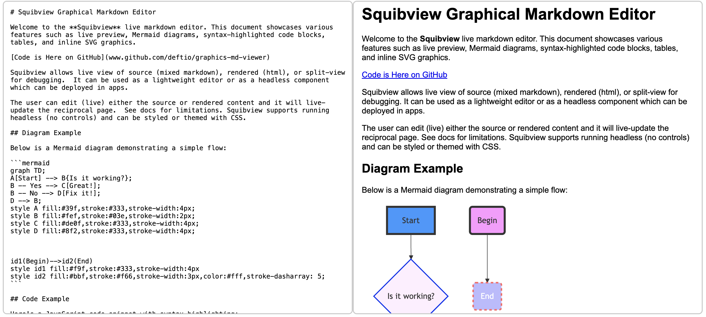

SquibView is a headless JavaScript embeddable editor/viewer that renders GitHub-Flavored Markdown (or full HTML pages) on the fly.
For Markdown inputs, it supports rendering Mermaid diagrams, syntax-highlighted code blocks, tables, and inline SVG graphics. This provides a powerful and interactive way to view and export Markdown content as HTML.
For HTML inputs, it embeds the content within an iframe for viewing.
SquibView supports full cut-and-paste functionality and allows edits made in the rendered view to be reflected back in the source.
<br> tag), end a line with two or more spaces.<p> tags), leave a blank line between blocks of text.# Title
This is line one.··
This is line two (after two spaces, so it's a hard break).
This is a new paragraph.
This line is part of the new paragraph.
·· represents two spaces.)SquibView can be used as a standalone tool for processing complex Markdown output (e.g., from LLMs like OpenAI, Claude, Mistral, or Deepseek) or as a simple live preview Markdown editor.
As an embeddable component, SquibView allows your application to render complex Markdown or other content on the fly. It can dynamically switch between a split-screen view (source and output) or an output-only view, serving effectively as a renderer.
SquibView offers multiple build formats for different use cases:
<!-- Required dependencies -->
<script src="https://cdnjs.cloudflare.com/ajax/libs/markdown-it/12.3.2/markdown-it.min.js"></script>
<script src="https://cdnjs.cloudflare.com/ajax/libs/highlight.js/11.5.1/highlight.min.js"></script>
<script src="https://unpkg.com/mermaid/dist/mermaid.min.js"></script>
<!-- SquibView CSS -->
<link rel="stylesheet" href="../dist/squibview.css">
<!-- ESM Import -->
<script type="module">
import SquibView from '../dist/squibview.esm.min.js';
const editor = new SquibView('#editorContainer', {
titleShow: true,
titleContent: "SquibView Editor"
});
// Set content
editor.setContent('# Hello SquibView\n\nThis is a test.', 'md');
</script>
<!-- Required dependencies -->
<script src="https://cdnjs.cloudflare.com/ajax/libs/markdown-it/12.3.2/markdown-it.min.js"></script>
<script src="https://cdnjs.cloudflare.com/ajax/libs/highlight.js/11.5.1/highlight.min.js"></script>
<script src="https://unpkg.com/mermaid/dist/mermaid.min.js"></script>
<script src="https://unpkg.com/tiny-emitter@2.1.0/dist/tinyemitter.min.js"></script>
<script src="https://unpkg.com/diff-match-patch@1.0.5/index.js"></script>
<script src="https://unpkg.com/turndown@7.1.2/dist/turndown.js"></script>
<!-- SquibView CSS -->
<link rel="stylesheet" href="../dist/squibview.css">
<!-- UMD Import -->
<script src="../dist/squibview.umd.min.js"></script>
<script>
const editor = new SquibView('#editorContainer', {
titleShow: true,
titleContent: "SquibView Editor"
});
// Set content
editor.setContent('# Hello SquibView\n\nThis is a test.', 'md');
</script>
<!-- SquibView CSS -->
<link rel="stylesheet" href="../dist/squibview.css">
<!-- Standalone Import (includes all dependencies) -->
<script src="../dist/squibview.standalone.min.js"></script>
<script>
const editor = new SquibView('#editorContainer', {
titleShow: true,
titleContent: "SquibView Editor"
});
// Set content
editor.setContent('# Hello SquibView\n\nThis is a test.', 'md');
</script>
| Format | File Size | Dependencies | Use Case |
|---|---|---|---|
| ESM | Smaller | Required externally | Modern applications with bundlers |
| UMD | Medium | Required externally | Traditional script tags, CommonJS |
| Standalone | Larger | Included | Quick prototypes, no external dependencies |
SquibView is available via CDN (unpkg) and as an npm package.
See the examples folder
SquibView can be configured with various options when initializing:
const editor = new SquibView('#editorContainer', {
// Basic options
initialContent: '', // Initial content to load
inputContentType: 'md', // Type of content ('md', 'html', 'reveal', 'csv', 'tsv')
showControls: true, // Whether to show control buttons
titleShow: false, // Whether to show the title section
titleContent: '', // Content for the title section
initialView: 'split', // Initial view mode ('src', 'html', 'split')
baseClass: 'squibview', // Base CSS class for styling
// Image handling
preserveImageTags: true, // Default: true. Whether to keep original image URLs in source view.
// When true: images remain as <img> tags with original URLs in the source view.
// When false: images are converted to data URLs in the source view.
// Note: For clipboard operations (copy), images are always converted to data URLs
// to ensure portability, regardless of this setting.
// Text replacement
onReplaceSelectedText: null // Callback for text replacement on selection
});
Detailed Example: Image Handling with preserveImageTags
The preserveImageTags option provides fine-grained control over how image src attributes are handled within the source view and during copy-to-clipboard actions. By default (true), SquibView keeps external image links as they are in your source Markdown, which is often preferred for readability and maintainability of the source. When set to false, images are converted to inline data URLs directly in the source view upon rendering. Regardless of this setting, when content is copied to the clipboard, images are always converted to data URLs to ensure maximum portability and that the images are embedded within the copied content.
// Create editor with default image handling (preserves original URLs in source view)
const editor1 = new SquibView('#editor1'); // preserveImageTags defaults to true
// Create editor that converts images to data URLs in source view
const editor2 = new SquibView('#editor2', {
preserveImageTags: false
});
// Set content with images
const markdown = `
# Image Example


`;
editor1.setContent(markdown, 'md');
// In editor1's source view, images will keep their original URLs (e.g., './images/example.png').
// If content from editor1 is copied, the images in the clipboard HTML will use data URLs.
editor2.setContent(markdown, 'md');
// In editor2's source view, images will be converted to data URLs (e.g., 'data:image/png;base64,...').
// If content from editor2 is copied, the images will also use data URLs.
Clone the Repository:
git clone https://github.com/deftio/squibview.git
cd squibview
Running the Examples:
The examples/ directory contains various HTML files demonstrating different SquibView features and build types.
To run them:
examples/ directory.*.html files (e.g., example_ESM.html) in your web browser.You can typically do this by double-clicking the file or using "Open with" from your file explorer. Once an example is open:
SquibView uses Jest for unit/integration tests and Puppeteer for End-to-End (E2E) tests.
Unit/Integration Tests:
npm run testcoverage/ directory. Open coverage/lcov-report/index.html to view detailed coverage.End-to-End (E2E) Tests:
npm run test:e2ehttp-server on port 8000. Ensure this port is free before running.Run All Tests (Recommended before releases):
npm run test:allContributions are welcome! Whether you're adding new features, fixing bugs, or improving documentation, please follow these guidelines:
Fork the Repository: Click the "Fork" button on GitHub to create your own copy.
Create a Branch:
git checkout -b feature/your-feature-name
Commit Your Changes: Make your changes and commit them with a clear message.
git commit -m "Add description of changes"
Push to Your Fork:
git push origin feature/your-feature-name
Open a Pull Request: Go to the original repository on GitHub and open a pull request from your fork's branch. Provide a clear description of your changes and why they're useful.
Please make sure your contributions follow the project's coding style and that tests pass, if applicable.
This project is licensed under the BSD-2 License. See the LICENSE file for details.